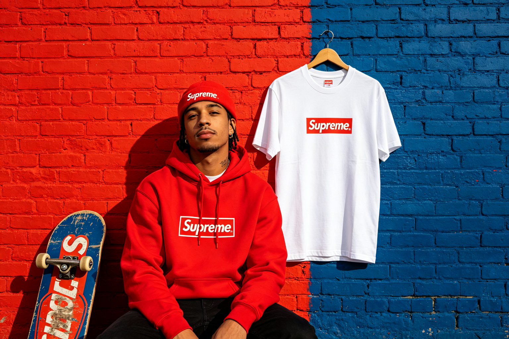

Supreme 潮牌设计 · BEA 双极情绪美学深度分析
分析对象：Supreme 纽约潮牌视觉与产品设计 分析方法：BEA 双极情绪美学六步法 分析时间：2026-09-13 分析师：BEA 工具生成
一、情绪基调
Supreme 是街头潮牌的鼻祖，也是BEA先锋反叛范式的商业典范。它的核心感受是刺激、反叛、酷、想要——大面积红白色高对比和锐利字体制造强烈攻击感，而极简的排版秩序和稀缺性营销维持审美安全，做到"越阈边缘的痛快"。
- 主导范式：⚡ 先锋反叛（偏冷峻克制）
- W(T) 危极权重估计：0.68
- 第一情绪：刺激、反叛、酷、被挑战、想要拥有
二、双极构成拆解
亲极元素（P+，安全/秩序锚点）
| 维度 | 元素 | 极性强度 | 作用 |
|---|---|---|---|
| 版式 | 极简排版、居中Logo、大量留白 | P+ 6 | 秩序锚点，把反叛收进可控框架 |
| 色彩 | 白色基底（Box Logo T恤） | P+ 5 | 安全基底，中和红色攻击 |
| 字体 | Futura Bold（几何无衬线，规整） | P+ 4 | 秩序感，区别于"乱涂乱画"的伪反叛 |
| 产品 | 基础款型（T恤/卫衣/帽衫） | P+ 5 | 可穿戴的安全框架，让反叛"穿得出去" |
| 营销 | 稀缺性/排队文化（仪式感秩序） | P+ 4 | 社群归属感，把反叛转化为"我们的仪式" |
危极元素（T−，警觉/反叛）
| 维度 | 元素 | 极性强度 | 作用 |
|---|---|---|---|
| 色彩 | 高饱和正红（Supreme Red #E62020） | T− 8 | 核心攻击源，高唤醒，刺激，反叛 |
| 对比 | 红白强对比（Box Logo） | T− 7 | 强烈视觉冲击，瞬间捕获注意 |
| 字体 | 锐利几何无衬线，粗重笔画 | T− 6 | 力量感，攻击性，街头气质 |
| 图形 | 红底白字Box Logo（像警示标签） | T− 7 | 警示/标签意象，潜意识警觉 |
| 营销 | 限量发售/联名/争议性合作 | T− 7 | 稀缺焦虑，FOMO，刺激购买欲 |
| 文化 | 街头/滑板/嘻哈亚文化基因 | T− 6 | 反叛身份认同，反主流姿态 |
主辅比与层级策略
- 主辅比：危极约68%，亲极约32%——典型的先锋反叛配比
- 层级策略：同向叠加（强化型）——宏观反叛（红白色高对比）+ 中观反叛（锐利字体+Box Logo）+ 微观反叛（街头文化基因），层层加码制造攻击感；而亲极（极简排版秩序+基础款型）被压缩到32%，作为"审美安全锚"——这是先锋范式区别于"难看/事故"的唯一防线。
三、定位：张力 × 秩序 象限
🏆 高张力 × 高秩序 = 美感黄金区（先锋象限）
- 张力：极高（68%危极，高饱和红、强对比、锐利字体、反叛文化）
- 秩序：高（极简排版、规整字体、基础款型、统一视觉语言）
- 说明：Supreme 停在审美窗口的右缘——张力拉满但不越界。它的秩序不是"柔和的秩序"，而是"冷峻的秩序"——用极简和规整把强烈的反叛收进可控框架。如果去掉这层秩序（比如乱涂乱画、无规则排版），就会从"先锋酷"滑向"廉价乱"。
四、BEA 四维评分卡
| 维度 | 得分 | 满分 | 评价 |
|---|---|---|---|
| 双极张力 | 24 | 25 | 反叛与秩序配比精准，张力拉满但不越界，先锋范式的典范 |
| 结构秩序 | 22 | 25 | 极简排版和统一视觉语言提供强秩序，但部分联名产品秩序感略弱 |
| 阈值安全 | 21 | 25 | 停在审美窗口右缘，面向高阈值受众；大众可能觉得"太冲"，但目标受众享受"被挑战" |
| 语境适配 | 24 | 25 | 完美匹配街头潮牌定位，亚文化基因与品牌高度契合，稀缺性营销放大张力 |
| 总分 | 91 | 100 | 卓越作品·先锋美学典范 |
五、核心优点
- 32%秩序锚点的精准控制：先锋范式的成败全在"那30%秩序锚点"——Supreme 用极简排版、规整字体和基础款型，把68%的强烈反叛收进可控框架，做到"酷而不乱，反叛而不廉价"。
- 色彩即身份：Supreme Red（#E62020）是品牌的核心资产——高饱和正红的危极强度高达8，瞬间唤醒和捕获注意，红白强对比成为品牌的视觉签名。这是BEA"用单一维度定义品牌"的典范。
- 越阈边缘的精准拿捏：Supreme 始终停在审美窗口的右缘——争议性联名、限量发售、反主流姿态，不断把张力推向越阈边缘，但从不真正越界（不涉及真正的违法/伤害）。"越阈边缘的痛快"是先锋美学的核心快感。
- 产品即安全框架：基础款型（T恤/卫衣）是最强的安全框架——它告诉消费者"这是可以穿出去的衣服，不是真正的反叛行为"，从而把街头反叛的危极唤醒收编为"酷的快感"。
- 稀缺性放大张力：限量发售和排队文化制造FOMO（害怕错过），把产品的视觉张力转化为心理张力——"得不到的才最想要"，这是BEA张力机制在营销层面的延伸。
六、可优化方向（锦上添花）
- 跨品类的张力一致性：Supreme 的核心产品（Box Logo T恤）张力控制精准，但部分联名产品（特别是与奢侈品牌的联名）可能出现张力冲突（街头反叛 vs 奢侈精致），需要更严格的跨品类BEA审计。
- 数字体验的张力适配：Supreme 的官网和App设计相对保守（偏冷峻克制），与品牌的先锋反叛范式略有错位，可适当提高数字体验的张力水平，保持全渠道一致性。
- 可持续性与反叛的平衡：随着品牌主流化，Supreme 的"反叛"姿态可能被稀释（"反叛的商业化"悖论），需要不断寻找新的张力源（新材料/新合作/新文化），避免滑向"呆板平庸区"。
七、总结
Supreme 是BEA先锋反叛范式的最高商业典范之一，总分91/100。它证明了：最酷的设计不是"越乱越反叛"，而是"用30%的精准秩序压住70%的强烈反叛"；最刺激的体验不是"真正的危险"，而是"越阈边缘的安全痛快"。
对潮牌/亚文化设计师的启示： - 先锋范式的成败全在"那30%秩序锚点"——去掉秩序，酷就变成乱 - 色彩可以定义品牌——一个高唤醒色+强对比，可以成为视觉签名 - 越阈边缘是先锋美学的黄金位置——不断推近但永不越界 - 产品本身就是安全框架——基础款型让反叛"穿得出去" - 稀缺性可以放大张力——FOMO是视觉张力在心理层面的延伸
本报告由 BEA 双极情绪美学分析工具生成 · 理论作者：星空本空 · CC BY 4.0